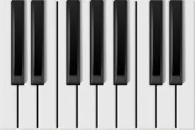

Olá, eu me chamo Luís Guilherme (aka Minho ou Nunes),
nasci em Recife (zn graças a deus), tenho 19 anos e sou aluno do primeiro período de Ciência da Computação pelo CIn.
Conlcluí o ensino médio pelo Colégio de Aplicação da UFPE, mas antes disso estudei na Escola Mater Christi e no Colégio Damas.
Por que escolhi Ciência da Computação?
Eu nunca busquei me informar muito sobre a área de tecnologia (inclusive sempre fui meio pato)
e nunca tinha tido contato com programação até passar no vestibular. Não fazia ideia do que cursar até quase metade do ensino
médio, até que fui com o colégio para a ExpoUFPE (exposição dos cursos da UFPE) e fui até a barraquinha de CC. Lá me explicaram
melhor como seria o curso e isso despertou meu interesse na hora. Depois fui dar uma procurada melhor e cá estou eu. Uhuul

Hobbies e Interesses
Sempre gostei muito de esportes. Já fiz futsal e futebol quando era mais novo e, como grande parte dos meninos,
sonhei em ser jogador (até parece), aí comecei a me interessar por basquete e fiquei alucinado pelo esporte, depois academia
e hoje em dia não faço absolutamente nada. No máximo jogo um xadrezinho... Além disso sempre gostei muito de música e durante
a pandemia comecei do nada a colecionar discos de vinil. Fiquei viciado e ficava sempre atrás de um novo.
Agora minha coleção tem cerca de 120 discos e a maioria está catalogada na plataforma discogs e você pode ver clicando
aqui. Além disso comecei a praticar piano no ano passado e é meu principal lazer atualmente. Video meu tocando:
Chovendo na Roseira | Piano